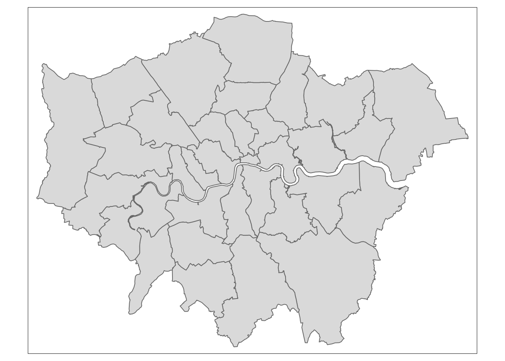

R Packages
owidR
This package imports data from Our World in Data into the R environment. Our World in Data collect and publish hundreds of country level datasets on economic and social issues. owidR makes it easy to search through these datasets, load them into R and quickly visualise the data. You can download owidR from CRAN using install_packages("owidR"). Here is an example using data on democracy:
# search for dataset titles that begin with 'liberal democracy'
owid_search("^liberal democracy") urls
[1,] "liberal-democracy"
[2,] "liberal-democracy-row"
[3,] "liberal-democracy-today-vs-past-schooling"
[4,] "liberal-democracy-popw-vdem"
titles
[1,] "Liberal democracy"
[2,] "Liberal democracy"
[3,] "Liberal democracy today vs. past average years of schooling"
[4,] "Liberal democracy weighted by population" # let's use the liberal democracy data from varieties of democracy
lib_democ <- owid("liberal-democracy")
lib_democ# A tibble: 30,858 × 6
entity code year libdem_vdem_owid libdem_vdem_low_ow… libdem_vdem_hig…
* <chr> <chr> <int> <dbl> <dbl> <dbl>
1 Afghanistan AFG 1789 0.035 0.017 0.046
2 Afghanistan AFG 1790 0.035 0.017 0.046
3 Afghanistan AFG 1791 0.035 0.017 0.046
4 Afghanistan AFG 1792 0.035 0.017 0.046
5 Afghanistan AFG 1793 0.035 0.017 0.046
6 Afghanistan AFG 1794 0.035 0.017 0.046
7 Afghanistan AFG 1795 0.035 0.017 0.046
8 Afghanistan AFG 1796 0.035 0.017 0.046
9 Afghanistan AFG 1797 0.035 0.017 0.046
10 Afghanistan AFG 1798 0.035 0.017 0.046
# … with 30,848 more rowsstatxplore
This packages imports data from the Department for Work and Pensions’ statXplore repository of published statistics on pensions and benefits. This package is currently in the early stages of development and not yet published on CRAN. Here is an example:
API_KEY <- "YOUR_API_KEY"
pip_regs_age <- start_query("Personal Independence Payment", "PIP Registrations", API_KEY) |>
add_measure("PIP Registrations") |>
add_fields(c("Month", "Age (bands and single year)")) |>
fetch()
pip_regs_age# A tibble: 1,853 × 3
month age_bands_and_single_year pip_registrations
<chr> <chr> <dbl>
1 201304 (Apr-13) 16-19 106
2 201304 (Apr-13) 20-24 203
3 201304 (Apr-13) 25-29 201
4 201304 (Apr-13) 30-34 246
5 201304 (Apr-13) 35-39 242
6 201304 (Apr-13) 40-44 331
7 201304 (Apr-13) 45-49 422
8 201304 (Apr-13) 50-54 509
9 201304 (Apr-13) 55-59 448
10 201304 (Apr-13) 60-64 424
# … with 1,843 more rowsukmap
This package is a wrapper around the Office for National Statistics’ geospatial API. It is currently experimental but allows for the easy importing of geospatial data into R of class sf. At the moment the API only allows fetching of the most recent UK geography data.
# get map data for london boroughs
london <- uk_codes("E09") |>
uk_map()
# use the tmap package to easily see what the map data looks like
tmap::qtm(london)